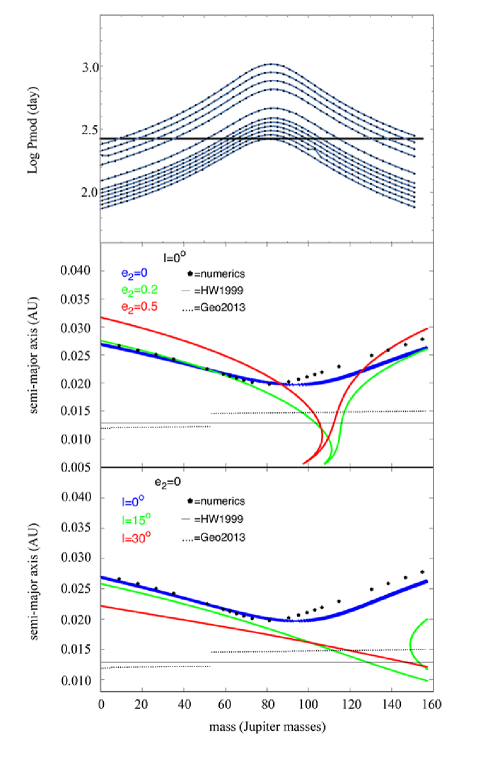
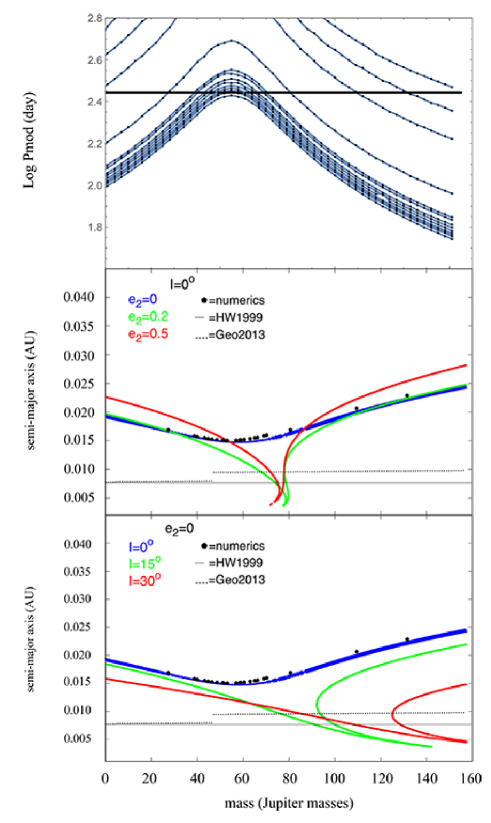
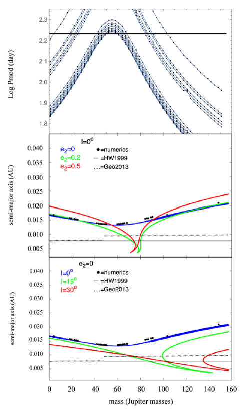
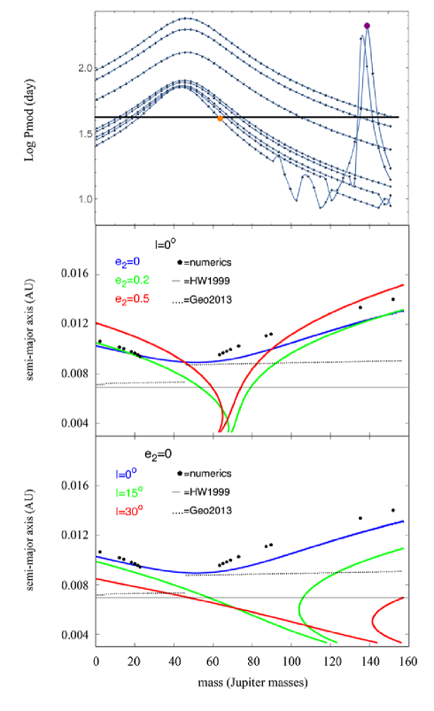
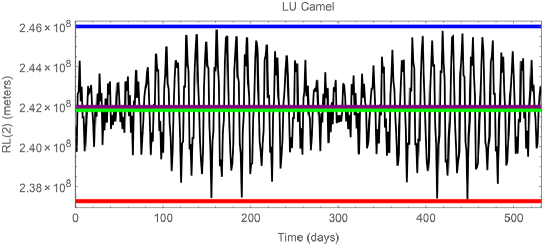
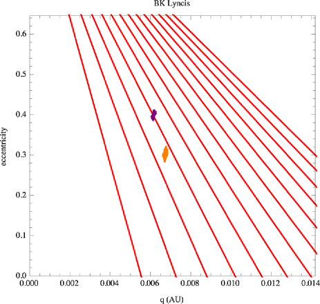

اختبار فرضية الجسم الثالث في المتغيرات الكارثية LU Camelopardalis وQZ Serpentis وV1007 Herculis وBK Lyncis.
الملخص
تُظهر بعض المتغيرات الكارثية (CVs) فترة ضوئية طويلة جدًا (VLPP). نحسب خصائص جسم ثالث افتراضي، نفترض في البداية أنه في مدار دائري مستو، وذلك بمواءمة VLPP النمذجي مع VLPP المرصود لأربعة متغيرات كارثية مدروسة هنا: LU Camelopardalis (LU Cam) وQZ Serpentis (QZ Ser) وV1007 Herculis (V1007 Her) وBK Lyncis (BK Lyn). وتؤخذ المدارات اللامركزية وذات الميل المنخفض لجسم ثالث في الاعتبار باستخدام نتائج تحليلية. وتستند المعلمات المختارة لمكوّنات الثنائي إلى الفترة المدارية لكل متغير كارثي. كما نحسب أصغر نصف محور رئيسي مقابل مسموح به قبل أن يصبح مدار الجسم الثالث غير مستقر. نطبّق تصحيحًا ما بعد نيوتني تحليليًا من الرتبة الأولى، ونجد معدل سبق الحضيض، لكنه لا يستطيع تفسير أي من قيم VLPP المرصودة. وللمرة الأولى، نقدّر أيضًا أثر الاضطرابات العلمانية الناجمة عن هذا الجسم الثالث الافتراضي في معدل انتقال الكتلة لهذه المتغيرات الكارثية. وحرصنا كذلك على أن تكون سعة التغير المرصودة والمحسوبة قابلة للمقارنة. تتراوح كتلة الجسم الثالث التي تحقق جميع القيود من 0.63 إلى 97 كتلة مشتري.
تُظهر نتائجنا دليلًا إضافيًا يدعم فرضية وجود جسم ثالث في ثلاثة من هذه المتغيرات الكارثية، لكنه دعم هامشي فقط في V1007 Her.
keywords:
(نجوم:) مستعرات، متغيرات كارثية – نجوم: أجسام منفردة (Lu Camel, QZ Serp, V1007 Her, BK Lyn) – (نجوم:) ثنائيات (بما في ذلك المتعددة): قريبة–كواكب وتوابع: تطور ديناميكي واستقرار1 مقدمة
المتغير الكارثي (CV فيما يلي) هو نظام نجمي ثنائي شبه منفصل يتميز باستقرار خاص (Frank et al. 2002). ويتكوّن المتغير الكارثي من نجم أولي هو قزم أبيض (WD) ونجم ثانوي أقل كتلة من نجوم النسق الرئيسي، غالبًا من النوع M، مع أن الصنف الطيفي قد يمتد من نجم من النوع K إلى نجم من النوع L. والشرط الذي يحدد المسافة بين المكوّنين هو أن نجم النسق الرئيسي يملأ فص روش المقابل له ويفقد مادة عبر نقطة لاغرانج . وتتراكم المادة على القزم الأبيض عبر قرص تراكم، ما لم يكن للقزم الأبيض حقل مغناطيسي قوي بما يكفي لمنع تشكّل القرص. وإذا اضطرب النظام لأي سبب، فإنه يميل إلى العودة إلى الاتزان.
تحافظ آليتان على توازن المتغير الكارثي: التمدد التطوري للنجم الثانوي، ونقصان نصف المحور الرئيسي للثنائي بسبب فقدان الزخم الزاوي. ولهذا النقصان في الزخم الزاوي مصدران محتملان، يعتمدان على الفترة المدارية للنظام الثنائي. المصدر الأول هو الكبح المغناطيسي، وهو الأثر السائد في الأنظمة التي تزيد فتراتها المدارية على ثلاث ساعات (Whyte and Eggleton 1985,Livio and Pringle 1994). أما المصدر الثاني فهو إصدار الموجات الثقالية في الأنظمة ذات الفترات المدارية الأقل من ساعتين (Faulkner 1976; Chau and Lauterborn 1977). وفي مجال الفترات 2-3 h، لا تكون أي من الآليتين فعالة في إزالة الزخم الزاوي. ومن ثم، فإن عدد الأنظمة المعروفة في ذلك المجال، المسمى فجوة الفترات، أصغر بكثير.
لا تستطيع المادة التي يفقدها النجم الثانوي عبر النقطة أن تسقط مباشرة على النجم الأولي؛ بل تشكّل بدلًا من ذلك قرص تراكم (Frank et al. 2002; Ritter 2008). ويكون قرص التراكم هذا شديد اللمعان إلى درجة أنه يطغى على ضوء النجمين معًا. ويتناسب لمعان القرص مع معدل انتقال الكتلة. لذلك، إذا تغيّر معدل انتقال الكتلة، تغيّر لمعان النظام. وعلى وجه الخصوص، فإن تغير موقع النقطة سيغيّر معدل انتقال الكتلة، ونتيجة لذلك سيتغير لمعان النظام كله.
تشتهر المتغيرات الكارثية بتغيرها على مقاييس زمنية ومقدارية مختلفة. وفي هذه الورقة، سننظر في نمط محدد: تغير ذي سعة منخفضة نسبيًا (0.07–0.97 mag) بفترات تتجاوز الفترات المدارية بمئات إلى آلاف المرات. وقد عُزلت الفترة الضوئية الطويلة جدًا (VLPP فيما يلي) أول مرة في FS Aur (Chavez et al. 2012, 2020)، مع أن الجسم يُظهر تغيرات كثيرة أخرى. وقد حُددت قيم VLPP إضافية في متغيرات كارثية أخرى (مثل Thomas et al. 2010; Kalomeni 2012; Chavez et al. 2012; Yang et al. 2017; Chavez et al. 2020).
اقتُرحت آليات مختلفة لتفسير VLPPs. فقد وجد Thomas et al. (2010) تضمينًا طويل الأمد بفترة مقدارها 4.43 يومًا في المتغير الكارثي PX And، باستخدام تحليل الكسوف، واقترحوا أن فترة سبق القرص هي أصل VLPP. ومثال آخر هو نظام DP Leo، حيث وجد Beuermann et al. (2011) فترة مقدارها 2.8 سنة، باستخدام تغيرات أزمنة الكسوف، وخلصوا إلى أن جسمًا ثالثًا هو أفضل تفسير لـ VLPP. ووجد Honeycutt, Kafka and Robertson (2014) دورية مقدارها 25 يومًا في V794. واكتشف Kalomeni (2012) عدة متغيرات كارثية مغناطيسية ذات تغير طويل الأمد، بمقياس زمني يبلغ مئات الأيام، وخلص إلى أن تلك VLPPs تنشأ على الأرجح من تضمين انتقال الكتلة بسبب الدورات المغناطيسية في النجم المرافق.
وفي وقت أحدث، اقترح Chavez et al. (2012, 2020)، باستخدام تحليل ديناميكي، أن جسمًا ثالثًا يستطيع إحداث VLPP عبر اضطرابات علمانية في الثنائي الداخلي. ويمكن للجسم الثالث أن يُدخل تذبذبات في النقطة في الثنائي القريب، ومن ثم يتغير معدل انتقال الكتلة. وتُحدث هذه الآلية فترات بطول VLPPs في الثنائي الداخلي بواسطة اضطرابات علمانية مرصودة في المتغيرات الكارثية المذكورة أعلاه. وقد رُصدت VLPP في منحنيات الضوء الطويلة الأمد لعشرة متغيرات كارثية بواسطة Yang et al. (2017). وكآلية محتملة لـ VLPP في خمسة من الأنظمة العشرة، اقترح هؤلاء المؤلفون جسمًا ثالثًا يدور حول الثنائي القريب، مع كون النظام في رنين Kozai–Lidov (Kozai 1962, Lidov 1962)، وهو ما يتطلب ميلًا مداريًا بين مستوى الثنائي ومدار الجسم الثالث أكبر من 39.2∘. وبذلك استطاعوا تقدير الفترة المدارية المحتملة للجسم الثالث.
هدفنا الرئيس في هذا البحث هو تقصي ما إذا كان جسم ثالث يستطيع تفسير VLPP المرصودة للمتغيرات الكارثية الأربعة، بدلًا من الحصول على قيمة دقيقة لكتلة الجسم الثالث.
تُنظّم هذه الورقة كما يأتي. يقدم القسم 2 معلومات عن المتغيرات الكارثية المدروسة في هذا العمل ومعلماتها الابتدائية. ويعرض القسم 3 خصائص الجسم الثالث الناتجة من تحليلنا من أجل تفسير قيم VLPP المرصودة. ويتناول القسم 4 بإيجاز الدور المحتمل لتصحيح ما بعد نيوتني في قيم VLPP. وفي القسم 5، نعالج آثار جسم ثالث محتمل في معدل انتقال الكتلة ولمعان المتغيرات الكارثية الأربعة. وفي القسم 6، نعرض نتائجنا ونناقشها، ونقدم تعليقات ختامية على هذا العمل في القسم 7.
2 المتغيرات الكارثية المدروسة ومعلماتها الابتدائية
قام Yang et al. (2017) بمطابقة 344 من أصل 1580 متغيرًا كارثيًا معروفًا، واستخرجوا بياناتها من مستودع بيانات Palomar Transient Factory (PTF). ودُمجت هذه الصور مع منحنيات الضوء من Catalina Real-Time Transit Survey (CRTS). ووجدوا عشرة أنظمة ذات قيم VLPP غير معروفة؛ BK Lyncis (2MASS J09201119+3356423)، وCT Bootis، وLU Camelopardalis (2MASS J05581789+6753459)، وQZ Serpentis (SDSS J155654,47+210719.0)، وV825 Herculis (2MASS J17183699+4115511)، وV1007 Herculis (1RXS J172405.7+411402)، وUrsa Majoris 01 (2MASS J09193569+5028261)، وCoronae Borealis 06 (2MASS J15321369+3701046)، وHerculis 12 (SDSS J155037.27+405440.0) وVW Coronae Borealis (USNO-B1.0 1231-00276740). وحللوا كل نظام واقترحوا، تبعًا لقيمة VLPP الخاصة به، أصلًا هو الأرجح، مثل سبق قرص التراكم، والأنظمة الثلاثية الهرمية، وتغير الحقل المغناطيسي للنجم المرافق. وجادلوا بأنه إذا كانت الفترة الطويلة الأمد أقل من عدة عشرات من الأيام، فإن تفسير سبق القرص يكون مفضلًا. أما في الفترات الأطول فتُفضَّل فرضية النظام الثلاثي الهرمي أو تغيرات الحقل المغناطيسي. واقترحوا أن ستة من تلك الأنظمة العشرة هي ثلاثيات هرمية: BK Lyn وLU Cam وQZ Ser وV1007 Her وHer 12 وUMa 01.
يمتلك UMa 01 فترة مدارية طويلة مقدارها دقيقة (6.735 h)، وهي طويلة مقارنة بالأنظمة الأخرى في العينة. ووفقًا لتوزيع الفترات المدارية للمتغيرات الكارثية، فإن عدد الأنظمة ذات مثل هذه الفترة أو الأكبر منها صغير جدًا، ولذلك لا يمكن تطبيق معظم النتائج الإحصائية عليها (Knigge 2006; Knigge, Baraffe and Patterson 2011). ويُفترض أن UMa 01 قد تشكّل حديثًا، ولا توجد تقديرات جيدة بما يكفي لمعلمات أي من المكوّنين (مثل الكتلة ونصف القطر ودرجة الحرارة). إضافة إلى ذلك، حُدّد Her 12 بوصفه متغيرًا كارثيًا بواسطة Adelman-McCarthy et al. (2006)، لكننا لا ننمذجه لأن فترته غير مقيدة جيدًا، وربما تقع في المجال بين – دقيقة (Yang et al. 2017). ندرس كلًا من الأنظمة الأربعة المتبقية (أي LU Cam وQZ Ser وV1007 Her وBK Lyn) لمعرفة المزيد عن سماتها الديناميكية.
استُخدمت القيم التي أوردها Knigge et al. (2011) لحساب كتلة كل عضو في المتغير الكارثي. وقد فعلنا ذلك لأن مقالتهم تعرض جميع المعلمات التي نستخدمها لاحقًا في هذا البحث، مثل الكتلة ونصف القطر ونصف المحور الرئيسي لكل مكوّن من مكوّني الثنائي. وفي تلك الدراسة استخدموا متغيرات كارثية كسوفية وقيودًا نظرية للحصول على تسلسل مانحين شبه تجريبي للمتغيرات الكارثية ذات الفترات المدارية h. وقد قدّروا جميع المعلمات الفيزيائية والضوئية والطيفية الرئيسة للنجم الثانوي والأولي بوصفها دالة في الفترة المدارية. نستخدم البيانات من جدوليهم 6 و8 (Knigge et al. 2011) للحصول على معلمات المتغيرات الكارثية في اختيارنا. وعمليًا، نستخدم النسخة الإلكترونية من هذين الجدولين (وهي أكمل بكثير) للحصول على القيم المناسبة للمتغيرات الكارثية المدروسة هنا. وإذا كانت للأنظمة أي سمات خاصة فسنشير إليها في النص ونذكر المرجع المستخدم لتلك القيمة.
2.0.1 كتلة القزم الأبيض
أولًا، نصف بإيجاز قيمة الكتلة التي استخدمها Knigge et al. (2011). فقد أوضحوا في بحثهم أنهم استخدموا القيمة المتوسطة . وفي 2011 أشارت البيانات الجديدة إلى قيمة متوسطة للقزم الأبيض في المتغيرات الكارثية مقدارها . وذكروا أنهم، لأنهم كانوا قد بدأوا بالفعل في تجميع شبكة تسلسل المانحين ومسارات التطور، «اخترنا الإبقاء على بوصفها ممثلًا لكتلة القزم الأبيض». وفي وقت أحدث، أوردت مراجعة Zorotovic and Schreiber (2020) أن قيمة القزم الأبيض المتوسطة قد تكون أعلى حتى، بين . قررنا استخدام قيم Knigge et al. (2011) لجميع معلمات القزم الأبيض لتحقيق الاتساق الذاتي في هذه المقالة كلها، وكذلك لأنهم يقدمون تقديرات لـ و (كتلة القزم الأبيض ونصف قطره) المقابلة للفترة المدارية لكل متغير كارثي (وهما قيمتان ضروريتان لحسابات الأقسام التالية).
ولتوضيح كيف يؤثر ذلك في الحسابات، نود الإشارة إلى أنه في Chavez et al. (2012) أُجريت الحسابات باستخدام ، ثم حدّثناها إلى (تغير قدره 7%) في Chavez et al. (2020). للقيمة الدنيا في مخطط الشكل 8 (مقالة 2012)، اللوحة الوسطى (نصف المحور الرئيسي مقابل كتلة الجسم الثالث)، قيمة مقدارها ، بينما عندما تُستخدم (الشكل 3، مقالة 2020)، تقابل القيمة الدنيا . وهذا نقصان قدره 40% في كتلة الجسم الثالث عند القيمة الدنيا.
2.0.2 LU Camelopardalis
LU Cam هو متغير كارثي من نوع المستعر القزم، وقد حصل Jiang et al. (2000) على أول طيف لهذا النظام. وقد أورد Sheets et al. (2007) فترته المدارية أول مرة على أنها يومًا ساعة. وهناك أشاروا إلى أن الطيف المتوسط يُظهر متصلًا أزرق قويًا. ويورد Yang et al. (2017) قيمة VLPP مقدارها 265.76 يومًا، ويشيرون إلى تفسير النظام الثلاثي الهرمي بوصفه أفضل مرشح لديهم لتفسيرها.
وباستخدام بيانات Knigge et al. (2011) نحصل على ، . ونعرض جميع معلمات النظام في الجدول 1.
2.0.3 QZ Serpentis
صُنّف QZ Ser بوصفه نظامًا من نوع المستعر القزم. ويمتلك النظام فترة مدارية مقدارها دقيقة h وفقًا لـ Thorstensen et al. (2002a). وجد هؤلاء المؤلفون أن النظام ليس متغيرًا كارثيًا عاديًا، إذ إنه أحد الأجسام القليلة المعروفة ذات فترة مدارية قصيرة ونجم ثانوي غير قياسي من النوع K. ولهذا النجم الثانوي من النوع K كتلة أصغر بكثير من نجم K عادي بسبب تطور انتقال الكتلة غير المستقر على المقياس الحراري. وهناك أمثلة أخرى لهذا النوع من المتغيرات الكارثية. فمثلًا، وجد Thorstensen et al. (2002b) نجمًا من النوع K4 في المستعر القزم 1RXS J232953.9+062814، بينما وجد Ashley et al. (2020) نجمًا من النوع K5 حول متغير كارثي بفترة مقدارها 4.99 h.
استخدم Thorstensen et al. (2002a) نماذج تطورية لتقدير معلمات QZ Serpentis مثل ، مما أعطى ، حيث هو نصف قطر النجم الثانوي. كما استخدموا قيمة نموذجية لكتلة القزم الأبيض مقدارها ، وهي مستخدمة على نطاق واسع في 2002 (Jiang et al. 2000; Thorstensen at al. 2002a).
قدّر Thorstensen et al. (2002a) من رصد التغيرات الإهليلجية أن ميل النظام (بالنسبة إلى مستوى السماء) يجب أن يكون . ثم قرروا استخدام هذا التقدير لتقييد كتلة النجم الثانوي. ومضوا في فحص نسب الكتلة بين النجم الأولي والثانوي من 0.1 إلى 0.4 لهذا النظام. وباستخدام سعة سرعة النجم الثانوي أعطوا دالة كتلة مقدارها . ويمكن حساب الميل من الكتل ودالة الكتلة باستخدام المعادلة الآتية:
| (1) |
وبأخذ و، حصل Thorstensen et al. (2002a) على قيمة مقدارها .
إذا حسبنا القيم الإحصائية التي حصل عليها Knigge et al. (2011) لمعلمات هذا المتغير الكارثي (باستخدام الفترة المدارية لذلك)، نجد أن ، و، و، و. لذلك، فإن تقديري و كلاهما يقع جيدًا ضمن لايقين تقديرات Thorstensen et al. (2002a). وكما أشرنا سابقًا، قررنا استخدام قيم Knigge et al. (2011) لتحقيق الاتساق الذاتي في هذه المقالة كلها لأننا نحتاج إلى تقديرات لـ و؛ وستُستخدم كلتا القيمتين في الأقسام التالية.
إضافة إلى ذلك، وباستخدام هذه القيم في المعادلة 1 نحصل على قيمة للميل ، وهي تقع جيدًا ضمن لايقين الميل الرصدي الذي قدّره Thorstensen et al. (2002a)، وقريبة جدًا من القيمة التي يقدمونها.
قيمة VLPP التي وجدها Yang et al. (2017) هي 277.72، وهي الأطول بين الأنظمة الأربعة المدروسة، وخلصوا إلى أن نظامًا ثلاثيًا هرميًا هو أفضل سيناريو يمكن أن يفسر هذه الفترة. ويعرض الجدول 1 المعلمات المستخدمة لهذا النظام في هذا العمل.
2.0.4 V1007 Herculis
اكتشف Greiner et al. (1998) هذا المتغير الكارثي. ووجدوا أنه نظام قطبي بفترة مدارية مقدارها دقيقة ساعة. وبما أنه نظام قطبي، فلا يوجد قرص حوله، ولا توجد فترات مرتبطة بالقرص. وقدّر Greiner et al. (1998) كتلة النجم الثانوي باستخدام الفترة المدارية، فوجدوها ؛ وللقيام بذلك افترضوا علاقة كتلة–نصف قطر لنجوم النسق الرئيسي باستخدام Patterson (1984).
وباستخدام معلمات Knigge et al. (2011) لهذا المتغير الكارثي نحصل على أن و، وهي مبينة أيضًا في الجدول 1 مع بقية المعلمات. وقيمة VLPP المرصودة بواسطة Yang et al. (2017) هي 170.59 يومًا.
2.0.5 BK Lyncis
BK Lyn هو متغير كارثي شبيه بالمستعر، اكتشفه Green et al. (1998). والفترة المدارية المحسوبة هي دقيقة h، وقد وجدها Ringwald et al. (1996). إضافة إلى ذلك، وُجد أن النجم الثانوي من النوع M5V باستخدام التحليل الطيفي تحت الأحمر بواسطة Dhillon et al. (2000). ووُجد أن معدل التراكم يقع بين –، مما يقيّد كتلة القزم الأبيض في مجال واسع من القيم بين 0.4 و1.2. ووجد Yang et al. (2017) أن VLPP لهذا النظام هي 42.05 يومًا (وهي الأقل بين جميع المتغيرات الكارثية المدروسة هنا)، واستبعدوا التفسيرات المحتملة الأخرى باستثناء تفسير النظام الثلاثي الهرمي.
وباستخدام Knigge et al. (2011)، كما أشرنا في القسم الفرعي السابق، نحصل على و، مع عرض جميع معلمات النظام في الجدول 1
| Name of the CV | Binary Period | VLPP | |||||||||
|---|---|---|---|---|---|---|---|---|---|---|---|
| (hours) | () | () | () | (days) | (AU) | ||||||
| LU Camelopardalis | 3.5992 | 0.75 | 0.26 | 0.011 | 265.76 | 0.34 | 0.0055 | 15.55 | 16.10 | 0.55 | -9.02 |
| QZ Serpentis | 1.99584 | 0.75 | 0.15 | 0.011 | 277.72 | 0.20 | 0.0036 | 17.43 | 17.50 | 0.07 | -10.09 |
| V1007 Her | 1.99883 | 0.75 | 0.15 | 0.011 | 170.59 | 0.20 | 0.0036 | 17.83 | 18.80 | 0.97 | -10.09 |
| BK Lyncis | 1.7995 | 0.75 | 0.13 | 0.011 | 42.05 | 0.17 | 0.0033 | 14.40 | 15.08 | 0.68 | -10.14 |
3 متغير كارثي ثلاثي الأجسام
كما أُشير سابقًا، اقترح Yang et al. (2017) فرضية النظام الثلاثي الهرمي للأنظمة الأربعة المدروسة هنا بعد استبعاد تفسيرات أخرى. وهناك، بحثوا رنينات Lidov–Kozai بوصفها تفسيرًا ممكنًا لـ VLPP المرصودة، ووجدوا نصف المحور الرئيسي المحتمل للجسم الثالث. وينبغي أن يكون الميل المتبادل بين المستوى المداري للثنائي الداخلي والمستوى المداري للجسم الثالث أكبر من لكي تكون هذه الآلية فعالة في إحداث اضطراب مؤثر في الثنائي الداخلي.
نستكشف هنا إمكانية جديدة، هي أن الاضطراب العلماني الناجم عن جسم ثالث منخفض اللامركزية ومنخفض الميل يفسر VLPP، وكذلك تغير القدر الضوئي المرصود في هذه المتغيرات الكارثية الأربعة.
3.1 جسم ثالث في مدار قريب شبه دائري ومستوي
استبعد Chavez et al. (2012)، أثناء بحثهم نظام FS Aurigae، أن تكون VLPP مطابقة مباشرة لفترة جسم ثالث، لأن الجسم سيكون بعيدًا جدًا بحيث لا يكون له أثر مهم في الثنائي الداخلي. وأُجريت سلسلة من التكاملات العددية، وأظهرت أن الأثر ضئيل بالفعل ولا يمكن أن يفسر VLPP للمتغير الكارثي FS Aurigae.
وخُلص إلى أن جسمًا ثالثًا في مدار قريب شبه دائري ومستوي يمكن أن ينتج اضطرابات في لامركزية الثنائي المركزي، وأنها تُضمَّن على ثلاثة مقاييس مختلفة: فترة الثنائي ، وفترة المؤثر الاضطرابي ، والفترة العلمانية الأطول بكثير–VLPP. وقد دُرست الاضطرابات العلمانية تحليليًا وعدديًا بواسطة Georgakarakos (2002, 2003, 2004, 2006, 2009). ويمنع جسم ثالث اكتمال تدوير المدار بفعل المدّ عن طريق إنتاج تضمين طويل الأمد في اللامركزية (مثل Mazeh & Shaham 1979; Soderhjelm 1982, Soderhjelm 1984, Chavez et al 2012, 2020). ومن Georgakarakos (2003) يمكن تقدير سعة هذه اللامركزية باستخدام المعادلة الآتية:
| (2) |
حيث إن هي فترة الجسم الثالث حول الثنائي الداخلي، و هي لامركزية المدار، و. لذلك فإن أي تغيرات مع الزمن في اللامركزية ، مثل التضمينات المدروسة في Chavez et al. (2012)، سيكون لها أثر في اللامركزية للمتغير الكارثي، فتُضمّن وتغيّر موضع النقطة ومن ثم تغيّر لمعان النظام. وستُعرض تفاصيل النمذجة العددية في القسم التالي.
3.2 النمذجة العددية للحالة الدائرية
أجرينا محاكاة ديناميكية للمتغيرات الكارثية مع جسم ثالث افتراضي. واستخدمنا مكامل Runge–Kutta–Nystrom RKN 12(10) 17M عالي الرتبة لـ Brankin et al. (1989) لمعادلات حركة مسألة الأجسام الثلاثة الكاملة في إطار الإسناد العطالي لمركز الكتلة. وحُفظت الطاقة الكلية إلى أو أفضل في جميع التجارب العددية.
وكما في Chavez et al. (2012)، فإن التشوه المدي للنجوم في الثنائي القريب ليس مهمًا للمتغيرات الكارثية عمومًا، ويمكن اعتبار الجسمين كتلتين نقطيتين. ومن ثم تُعد الأجسام الثلاثة كلها كتلًا نقطية في تكاملاتنا. ويكون الثنائي في البداية في مدار دائري، وتتحرك الكتلة الثالثة في البداية في مدارها الدائري الخاص حول الثنائي الداخلي في المستوى نفسه. وتُختار الكتلة وفترتها المدارية عبر مجموعة من التجارب العددية.
نتبع الإجراء الآتي. نثبت قيمة فترة الجسم الثالث ، ونغيّر كتلته ، ونجري التكاملات العددية، ثم تُحسب اللامركزية بوصفها دالة في الزمن. ونحصل على الفترة العلمانية في كل تكامل من باستخدام مخطط دوريات Lomb–Scargle (Lomb 1976, Scargle 1982). ويبيّن كل ذلك أثر الكتلة في الفترة العلمانية.
في الأشكال 1–4 نعرض، كدالة في الكتلة، قيم VLPP ونصف المحور الرئيسي التي حصلنا عليها من تجاربنا العددية لكل متغير كارثي مدروس. وتمثل كل منحنى فترة معينة تبقى ثابتة بينما نغيّر الكتلة. ووصلنا النقاط باستخدام منحنى مستوفى (طريقة spline) في كل حالة. وتمثل نقطة سوداء تظهر، مثلًا، في اللوحة الوسطى من الشكل 1 نظامًا يستطيع تفسير VLPP المرصودة؛ أي إن أي نقطة معينة تمثل توليفة من نصف المحور الرئيسي والكتلة يمكنها أن تنتج VLPP المرصودة عبر الاضطرابات العلمانية.
3.3 النمذجة التحليلية للجسم الثالث في مدار لا مركزي ومائل
اتباعًا لـ Chavez et al. (2020)، نبحث أيضًا الأثر الذي قد تتركه لامركزية الجسم الثالث وميله في VLPP الناتجة والمعلمات المتوقعة لكتلة الجسم الثالث ونصف محوره الرئيسي.
قررنا استخدام نتائج تحليلية مشتقة سابقًا لدراسة أثر اللامركزية والميل. فقد دُرس التطور المداري للأنظمة الثلاثية الهرمية في سلسلة من المقالات (Georgakarakos 2002, 2003, 2004, 2006, 2009, 2013, وGeorgakarakos, Dobbs-Dixon & Way, 2016). وتركّز جزء من هذه الدراسات على التطور العلماني لهذه الأنظمة. ويمكن لهذه النتائج التحليلية أن تعطينا تقديرات لتردد حركة الثنائي الداخلي وفترتها. ومن ثم يمكننا تحديد قيم الكتلة والتشكيلات المدارية التي يمكن لرفيق محتمل يمثل جسمًا ثالثًا أن يملكها كي ينشئ الفترات العلمانية المرصودة في كل متغير كارثي.
نستخدم نتائج Georgakarakos (2009) لمؤثر اضطرابي مستو في مدار منخفض اللامركزية، ونستفيد من Georgakarakos (2003) للأنظمة المستوية ذات المؤثرات الاضطرابية اللامركزية. وأخيرًا، للأنظمة ذات اللامركزية المنخفضة والميول المتبادلة المنخفضة (مع 39.23∘) نستخدم نتائج Georgakarakos (2004).
يمكن العثور على التعابير التحليلية للترددات والفترات في ملحق هذه المقالة، بينما توجد تفاصيل الاشتقاقات في المقالات المذكورة أعلاه.
4 أثر التصحيح ما بعد النيوتني
هنا، نأخذ أيضًا في الاعتبار آثارًا ديناميكية أخرى قد تنتج الإشارة الطويلة الأمد التي نرصدها في منحنى الضوء للثنائيات النجمية.
ندرس أثر تصحيح نسبية عامة (GR) ما بعد نيوتني من الرتبة الأولى في مدار الثنائي النجمي.
بالنسبة إلى جميع الأزواج النجمية قيد البحث، يجعل نصف المحور الرئيسي الصغير للمدار إدراج تصحيح ما بعد نيوتني حالة مثيرة للاهتمام لوصف حركة النظام بدقة أكبر. ويؤدي إدراج تصحيح ما بعد نيوتني في مدارنا إلى سبق إضافي للحضيض بالمعدل الآتي (مثل Naoz et al. 2013, Georgakarakos & Eggl 2015):
| (3) |
حيث إن هو ثابت الجذب العام، و هي سرعة الضوء في الفراغ، و هو نصف المحور الرئيسي للثنائي الداخلي، و هي لامركزية الثنائي الداخلي. واستنادًا إلى معدل السبق المعطى في المعادلة أعلاه، تُعرض فترة دوران الحضيض ما بعد النيوتنية لجميع الأنظمة في الجدول 2. والفترات المحسوبة أطول من أن تفسر أيًا من قيم VLPP.
5 أثر الجسم الثالث في معدل انتقال الكتلة واللمعان
5.1 الحالات غير المغناطيسية
يمكن تقدير كيفية تأثير تضمين الثنائي الداخلي، الناتج عن الاضطراب العلماني للجسم الثالث، في انتقال الكتلة ولمعان النظام. نركز اهتمامنا أولًا على الحالات غير المغناطيسية، وهي LU Cam وQZ Ser وBK Lyn. ويتبع هذا القسم الفرعي Chavez et al. (2020)، ونقدم هنا مراجعة موجزة.
لحساب فقدان الكتلة من النجم الثانوي، يلزم استخدام تعريف . وحساب حجم فص روش مباشرة صعب، لذلك من الأفضل تعريف نصف قطر مكافئ لفص روش بوصفه نصف القطر، ، لكرة لها الحجم نفسه كفص روش. وقد عمّم Sepinsky et al. (2007) تعريف ليشمل الثنائيات اللامركزية، كما يأتي:
| (4) |
حيث إن هي المسافة بين النجمين عند أي زمن معطى. ويمكننا الحصول على من تكاملاتنا العددية لكل نظام.
نريد الآن معرفة تغير القدر الضوئي الذي تنتجه تلك التوليفة الخاصة من المعلمات، ثم يمكننا المقارنة مع تغير القدر الضوئي المرصود في منحنى الضوء. لذلك، يمكننا إيجاد النظام الذي يفسر المشاهدات على نحو أفضل في كل حالة وفقًا لحساباتنا.
نواصل كما يأتي لتقدير تغير القدر الضوئي الناتج عن الاختيار السابق للمعلمات. يمكننا حساب القيمة العظمى ، المبينة بخط أفقي أزرق في الشكل 5، والقيمة الصغرى ، المبينة بخط أفقي أحمر في الشكل 5، لكل نظام مباشرة من نتائجنا العددية. ومن هنا، يمكننا تقدير معدل انتقال الكتلة ومن ثم قيمة لمعان كل متغير كارثي.
بافتراض أن النجم الثانوي عديد حدود بمعامل 3/2 وأن الكثافة حول تتناقص أسيًا، يمكن تقدير معدل انتقال الكتلة باستخدام المعادلة 2.12 من Warner (1995):
| (5) |
حيث إن ثابت عديم الأبعاد ، و هو نصف قطر النجم الثانوي، و هو المقدار الذي يفيض به النجم الثانوي على فص روش الخاص به: ؛ و هي فترة الثنائي الداخلي. يجب حساب المسافة بعناية لأن معادلة حساسة جدًا لمقدار الفيض. وقررنا ضبط للحصول على قيمة التي نوردها هنا في الجدول 1؛ وفي الشكل 5 تُمثل قيمة بخط أفقي أرجواني. وبما أن دالة في الزمن، فإننا بدلًا من استخدامها نستخدم قيمتها المتوسطة، ، المبينة بخط أخضر. ومن ثم نضبط القيمة لكل تكامل (في الشكل 5 النظام هو LU Cam) حتى يكون الفرق المعطى بواسطة هو الصحيح، بحيث تكون كما في الجدول 1.
يمكننا حساب القيمتين العظمى والصغرى لمعدل انتقال الكتلة باستخدام قيمتي و للحصول على و.
هناك مصدران رئيسان للمعان المتغير الكارثي: البقعة الساخنة والقرص. فاللمعان الناتج عن ما يسمى البقعة الساخنة يُنتج عندما يعبر تيار من الكتلة النجمية النقطة ويصطدم بالقرص؛ ويُعطى تعبيره (Warner 1995) كما يأتي:
| (6) |
حيث إن هو اللمعان الناتج عن البقعة الساخنة، ويكون نصف قطر القرص عادة ، مع كون نصف المحور الرئيسي للثنائي الداخلي (انظر الجدول 1). وبتطبيق هذه المعادلة على القيم القصوى في نحصل على قيمتي و.
وبدلًا من ذلك، يكون اللمعان الناتج عن قرص التراكم، باستخدام المعادلة 2.22a من Warner (1995)، كما يأتي:
| (7) |
وباستخدام هذه المعادلة يمكننا الحصول على القيم القصوى لـ و لكل نظام. ويُوجد اللمعان الكلي لكل قيمة قصوى بجمع اللمعان المقدر للبقعة الساخنة مع لمعان القرص، فنحصل على و لكل نظام.
بعد ذلك، يمكن حساب القدر البولومتري باستخدام ، مع استخدام واط بوصفه لمعانًا قياسيًا للمقارنة. ومن القيم القصوى حصلنا على و، مما يؤدي إلى فرق في القدر .
5.2 الحالة المغناطيسية
V1007 Her هو النظام المغناطيسي الوحيد ضمن اختيارنا، وهو، وفقًا لـ Wu & Kiss (2008)، نظام قطبي. ويُعطى لمعان التراكم لقزم أبيض متراكم بالصيغة:
| (8) |
| Name of the CV | VLPP | GR period | GR period |
|---|---|---|---|
| (days) | (days) | (years) | |
| LU Camelopardalis | 265.76 | 27851.13 | 76.25 |
| QZ Serpentis | 277.72 | 11445.08 | 31.33 |
| V1007 Her | 170.59 | 11245.42 | 30.79 |
| BK Lyncis | 42.05 | 9626.77 | 26.36 |
| Variable | LU Cam | QZ Serp | V1007 Her | BK Lyn |
|---|---|---|---|---|
| 7.1 | 12.5 | 13.0 | 5.9 | |
| (MJ) | 97 | 0.63 | 148 | 88 |
| (AU) | 0.021 | 0.019 | 0.021 | 0.011 |
| 0.55 | 0.07 | 0.73 | 0.68 |
بالنسبة إلى القطبيات في حالة عالية، تكون أعلى بكثير من اللمعان الذاتي للنجمين. ومن ثم لدينا . والقطبيات أنظمة تملأ فص روش، ويُعطى معدل انتقال الكتلة بالمعادلة 5، مع استخدام Sepinsky et al. (2007) مرة أخرى لحساب مباشرة من التكامل. ولذلك، ومن المعادلتين 5 و8، يمكن تقدير تغير اللمعان في V1007 Her من و.
6 النتائج والمناقشة
درسنا مجموعة من الشروط الابتدائية لجسم ثالث افتراضي في كل نظام، والطريقة التي يؤثر بها في كل من VLPP وتغير اللمعان. وتُعرض جميع نتائج التكاملات العددية كنقاط سوداء في الأشكال 1، 2، 3 و4 التي تقابل LU Cam وQZ Serp وV1007 Her وBK Lyn، على الترتيب.
تعرض اللوحة العليا من كل شكل الفترات العلمانية الناتجة للامركزية الثنائي بوصفها دالة في كتلة المؤثر الاضطرابي. ويقابل كل منحنى نسبًا مختلفة لـ . أما الخط الأفقي السميك فيقابل قيمة VLPP لكل نظام.
بالنسبة إلى نسبة معينة (أي منحنى معين)، تنتج بعض تكاملاتنا اضطرابات علمانية عند تغيير كتلة النظام لا تصل أبدًا إلى خط VLPP. ونجادل بأن الأنظمة التي تقطع خط VLPP وحدها تستطيع تفسير التغير الطويل الأمد في منحنى الضوء.
اللوحة الوسطى هي مخطط لنصف المحور الرئيسي للمؤثر الاضطرابي مقابل كتلته. وتشير النقاط السوداء إلى نتائج التكاملات العددية، في حين تمثل المنحنيات الصلبة حلولًا تحليلية من Georgakarakos (2009) (، منحنى أزرق) وGeorgakarakos (2003) (الحالات اللامركزية، منحنيان أخضر وأحمر). ويمثل الخط المستقيم حد الاستقرار المداري كما هو معطى في Holman & Wiegert (1999)، في حين أن الخط المنقط هو حد الاستقرار اعتمادًا على نتائج Georgakarakos (2013). وعلى خلاف Holman & Wiegert (1999)، لا يفترض Georgakarakos (2013) جسيمًا عديم الكتلة لأي من الأجسام الثلاثة. ومن ثم فإن فرعي الخط المنقط ناتجان عن اعتماد حد الاستقرار على كتلة المؤثر الاضطرابي.
تشبه اللوحات السفلى في الأشكال 1–4 ما قدمناه في اللوحة الوسطى، لكن الميل يُغيّر هنا. ففي الحالة المستوية (المنحنى الأزرق) نستخدم Georgakarakos (2009)، بينما في الحالات ثلاثية الأبعاد (المنحنيان الأخضر والأحمر) نستفيد من Georgakarakos (2004).
يسرد الجدول 3 النسبة بين فترة الجسم الثالث وفترة الثنائي الداخلي (أي )، وكتلة الجسم الثالث (بوحدات كتل المشتري )، ونصف المحور الرئيسي للجسم الثالث ( بوحدة AU)، وتغير القدر الضوئي لكل نظام (). ويمكننا مقارنة تغير القدر الضوئي لكل نظام بالقيم المرصودة التي تظهر في الجدول 1.
سنناقش الآن بعض تفاصيل النتائج لكل متغير كارثي. بحثنا عن جميع التكاملات العددية التي تطابق فترتها العلمانية الفترة المرصودة للنظام، ثم أجرينا جميع الحسابات المطلوبة لتقدير تغير القدر الضوئي الناشئ عن اضطرابات الجسم الثالث. وأُجري بحث إلى أن عُثر على نظام يطابق تغير القدر الضوئي المرصود للنظام. وأدى ذلك إلى نظام يستطيع في الوقت نفسه تفسير VLPP وتغير القدر الضوئي.

6.1 LU Camelopardis
لهذا المتغير الكارثي VLPP مرصودة مقدارها 265.76 يومًا، مع ، وهي أكبر نسبة بين المتغيرات الكارثية المدروسة هنا. ويعرض الشكل 1 نتائجنا العددية لهذا النظام.
كما تُعرض حدود الاستقرار المعطاة بواسطة Holman & Wiegert (1999) وGeorgakarakos (2013). يستبعد Holman & Wiegert أي AU (خط أفقي رمادي)، بينما يستبعد Georgakarakos أي AU (خط أسود متقطع). وينبغي توخي الحذر في الحالات اللامركزية عند التعامل مع قيم صغيرة لنصف المحور الرئيسي لأن الصيغ التحليلية تتضمن تفردات. وينطبق ذلك على بقية الأنظمة.
في هذا النظام تحديدًا، يكون الجسم الثالث في البداية في مدار دائري يفسر القيمة الرصدية ، أي h = 1.06 يومًا، وكتلته ، ونصف محوره الرئيسي AU. كما تطابق معلمات هذا النظام القيمة المرصودة .
وبدلًا من ذلك، فإن الفترة الطويلة المحسوبة باستخدام تصحيح GR من الرتبة الأولى لهذا النظام هي 27851.13 يومًا (76.25 سنة)، وهي أكبر بكثير من أن تفسر VLPP المرصودة البالغة 265.76 يومًا.


6.2 QZ Serpentis
قيمة VLPP المرصودة لهذا النظام هي 278 يومًا، ونسبة الكتلة هي . ويعرض الشكل 2 نتائجنا العددية والتحليلية للشروط الدائرية واللامركزية. هنا، يستبعد Holman & Wiegert (1999) أي AU (خط أفقي رمادي). وبدلًا من ذلك، يستبعد Georgakarakos (2013) AU (خط أسود متقطع). وتذكّر أن بعض التفردات قد تظهر للقيم الصغيرة لـ .
في هذا النظام تحديدًا، يكون الجسم الثالث الذي يبدأ في مدار دائري ويفسر القيمة المرصودة ، أي h = 1.04 يومًا، ذا كتلة مقدارها (وهي الأصغر بين الأنظمة)، ونصف محور رئيسي مقداره AU. ويطابق هذا النظام القيمة المرصودة .
وعلى نحو مشابه، لاحظنا في المدارات المائلة ذات أن القيم في تصبح أعلى منها في الحالة الدائرية، ولكن بمعدل أسرع من المعدل عند استكشاف الحالات اللامركزية. وعند تزداد الكتل أسرع من الحالة الدائرية كلما أنقصنا نصف المحور الرئيسي .
يعطي تصحيح GR من الرتبة الأولى لهذا النظام فترة مقدارها 11445.08 يومًا (31.33 سنة)، وهي أطول بكثير من أن تفسر الأيام 277.72 للفترة المرصودة.


6.3 V1007 Herculis
لهذا المتغير الكارثي VLPP مرصودة مقدارها 170.59 يومًا، ونسبة الكتلة معطاة بـ . ويعرض الشكل 3 نتيجة التكاملات العددية المنجزة، بما في ذلك المدارات الدائرية (تكاملات عددية) واللامركزية (تحليلية)، وكذلك حالتين بميولين مختلفين (تحليليًا) كما فعلنا من قبل.
يستبعد Holman & Wiegert (1999) أي AU (خط أفقي رمادي)، ويستبعد Georgakarakos (2013) أي AU (خط أسود متقطع).
في هذا النظام تحديدًا، الجسم الثالث الذي يبدأ في مدار دائري ويعطينا أقرب قيمة إلى ما نرصده هو (أي h = 1.08 يومًا)، بكتلة مقدارها ، ونصف محور رئيسي مقداره AU. ولا يطابق هذا النظام القيمة المرصودة ، لكنه الأقرب إلى تلك القيمة مع .
وأخيرًا، يعطينا تصحيح GR ما بعد النيوتني من الرتبة الأولى فترة مقدارها 11245.42 يومًا (أو 30.788 سنة)، وهي لا تستطيع تفسير VLPP البالغة 170.59 يومًا.
6.4 BK Lyncis
قيمة VLPP المرصودة هي 42.05 يومًا و، وكلتا القيمتين هما الأدنى رصدًا في مجموعة المتغيرات الكارثية لدينا. وبالمثل مع الأشكال السابقة، يعرض الشكل 4 نتائجنا لـ BK Lyncis.
يستبعد المعيار التجريبي لـ Holman & Wiegert (1999) أي AU (خط أفقي رمادي)، بينما يدل عمل Georgakarakos (2013) على إمكان استبعاد AU (خط أسود متقطع).
في هذا النظام، وبما أن حدّي الاستقرار أعلى من أدنى المنحنى للحالة الدائرية المستوية الابتدائية (النقاط السوداء والمنحنى الأزرق في اللوحتين الوسطى والسفلى من الشكل 5)، فإن الحلول الممكنة لهذا النظام تقع على الأرجح فوق هذين الحدين. والواقع أننا لم نجد عدديًا (النقاط السوداء) مدارات مستقرة دون 0.0094 AU؛ وسيُناقش ذلك في القسم الآتي.
بالنسبة إلى BK Lyncis، فإن الجسم الثالث في مدار ابتدائي دائري مستو الذي يعيد إنتاج ما رصدناه في منحنى الضوء للمتغير الكارثي على أفضل نحو له ( h = 0.44 يومًا)، وكتلة ، و AU. ويطابق هذا النظام القيمة المرصودة .
لا يستطيع تصحيح GR من الرتبة الأولى تفسير فترة VLPP المرصودة البالغة 42.05 يومًا، إذ إن الفترة المتنبأ بها هي 9626.77 يومًا (26.36 سنة)، وهي أكبر بكثير.
7 تعليقات ختامية
استكشفنا في هذه المقالة الأصل المحتمل للفترات الضوئية الطويلة جدًا (VLPPs) المرصودة في أربعة متغيرات كارثية: LU Camelopardalis وQZ Sepentis وV1007 Herculis وBK Lyncis، وكلها أُبلغ عنها أولًا بواسطة Yang et al. (2017).
نجد أن ثلاثة من الأنظمة الأربعة يمكن تفسيرها بالاضطرابات العلمانية لجسم ثالث يدور حول كل متغير كارثي. وفي حالة V1007 Herculis لم نستطع إيجاد مدار مستو ودائري ابتدائيًا يمكنه تفسير تغير القدر الضوئي الكبير نسبيًا المرصود .
تستند جميع تكاملاتنا ونمذجتنا العددية إلى تقديرات المعلمات المحسوبة باستخدام Knigge et al. (2011)، وباستخدام الفترة المدارية للمتغير الكارثي نقطة انطلاق. ثم قدرنا أفضل المعلمات الديناميكية لكل نظام.
دُرس Lu Camelopardalis بافتراض مدار ابتدائي دائري مستو بوسائل عددية، ووُجد أن التشكيل الذي يفسر كلًا من VLPP المرصودة وتغير القدر الضوئي له فترة مقدارها h، وكتلة مقدارها ، وهي أكبر من الكتلة الدنيا اللازمة لحدوث تفاعلات نووية في مركزه (83 MJ).
وبدلًا من ذلك، بالنسبة إلى QZ Sepentis، فإن التشكيل الذي يمكنه تفسير كل من VLPP المرصودة وتغير القدر الضوئي له h و. وكتلة هذا الجسم الثالث صغيرة مقارنة ببقية المتغيرات الكارثية، وتقع جيدًا ضمن الكتلة الكوكبية. ويرجح أن تكون هذه النتائج لأن تغير القدر الضوئي المرصود صغير جدًا ().
في V1007 Herculis يكون الجسم الثالث الذي يلائم على أفضل نحو VLPP المرصودة وتغير القدر الضوئي ذا h و؛ وينتج هذا النظام . وهذه الكتلة كبيرة جدًا (ككتلة قزم أحمر)، وحتى باستخدام هذه القيمة العالية لم يكن ممكنًا إعادة إنتاج تغير القدر الضوئي المرصود . ونخلص إلى أنه، إذا كانت جميع تقديراتنا صحيحة، فمن الممكن فقط على نحو هامشي أن يفسر جسم ثالث في مدار قريب من الدائري وشبه مستو VLPP وتغير القدر الضوئي في هذا النظام.

أخيرًا، لدينا نظام BK Lyn، وهو أكثر الأنظمة تحديًا في النمذجة. أدركنا أولًا أنه لا توجد أنظمة مستقرة بمدارات دون 0.0094 AU. ثم لم نستطع إيجاد المنحنى الكامل للتكاملات العددية في الأشكال 4 (المخططان الأوسط والسفلي). ويساعد المنحنى التحليلي الدائري الابتدائي (المعروض باللون الأزرق) مرجعًا لشكل المنحنى الكامل. ومن المهم الإشارة إلى أنه، حتى عندما تكون المنحنيات التحليلية مفيدة جدًا لرؤية أثر اللامركزية والميل في VLPP، فإننا لا نعرف أي المدارات مستقر وأيها غير مستقر. والنظام الذي يمكنه تفسير كل من VLPP المرصودة وتغير القدر الضوئي له h و، وهي كتلة قريبة من عتبة الكتلة للتحول إلى نجم من النوع M. ولاحظنا أيضًا في هذا النظام أنه في اللوحة العليا من الشكل 4، تتغير سلوكيات المنحنيات ذات المنخفضة (أي المنحنيات الأربعة في أسفل المخطط) عندما تقترب من 90–100 ، وتبدو كأنها تتذبذب وتملك زيادة مفاجئة في قيمة Pmod (المحور y). وبعد دراسة متأنية، أدركنا أن تلك التغيرات المفاجئة لا بد أن تنشأ من رنينات الحركة المتوسطة. ويعرض الشكل 6 اللامركزية بوصفها دالة في مسافة الحضيض لنظامين. وتقابل النقاط البرتقالية ، و AU ومتوسط لامركزية . أما النقاط الأرجوانية فتقابل نظامًا ذا ، و AU و. وقد اختيرت هذه الشروط الابتدائية لتقديم مثال على نظام يتطور بسبب اضطرابات علمانية (برتقالي)، وآخر يتطور بسبب اضطرابات رنينية (أرجواني). ويُلاحظ من الشكل 6 أن النظام الرنيني (الأرجواني) منغمس في رنين الحركة المتوسطة (MMR) 5:1، بينما يقع النظام البرتقالي بين MMR 4:1 و5:1.
نُظهر أيضًا في المخطط العلوي من الشكل 4 موضع النظامين الأرجواني والبرتقالي (كدوائر بلونيهما المقابلين). وهذا يدل على أن القمم المرصودة في الجزء السفلي الأيمن من المخطط ناتجة فعلًا عن الرنينات.
وكما يمكن ملاحظته في المخطط العلوي من الشكل 4، تزداد قيمة Pmod للمنحنيات المرتبطة بالرنينات بسرعة كبيرة مع اقتراب النظام من الرنين (قاطعًا خط VLPP الرصدي الأسود). ومن ثم يمكن إيجاد عائلات تشكيل مشابهة للوحتي الشكل 4 الوسطى والسفلى يمكنها تفسير VLPP المرصودة، ولكن باستخدام أنظمة رنينية بدلًا من العائلات العلمانية التي درسناها هنا. وقررنا ترك دراسة العائلات الرنينية لمساهمة مستقبلية.
نجد أنه في جميع الأنظمة لا تستطيع تصحيحات GR ما بعد النيوتنية من الرتبة الأولى تفسير VLPP المرصودة في أي من الأنظمة، لأن الفترات المتنبأ بها أكبر بكثير مقارنة بالقيم المرصودة.
قُدّرت جميع معلمات زوج النجوم (الكتل، وأنصاف المحاور الرئيسية، وأنصاف الأقطار، إلخ) التي تكوّن المتغيرات الكارثية باستخدام الفترة المدارية المرصودة. وبما أن هذه المعلمات تستند إلى قيم إحصائية متوسطة، فإن تقديراتنا لمعلمات الجسم الثالث، بدلًا من أن تكون قيمًا دقيقة، هي أيضًا تقديرات للجسم الثالث المحتمل الذي قد يفسر الخصائص المرصودة.
وجدنا في ثلاثة من الأنظمة الأربعة جسمًا ثالثًا في مدار ابتدائي دائري يفسر كلًا من VLPP المرصودة وتغير القدر الضوئي عبر إحداث اضطراب علماني في الثنائي الداخلي. وفي حالة V1007 Herculis لم يكن ممكنًا إيجاد نموذج عددي يمكنه تفسير تغير القدر الضوئي . ونجد أيضًا أنه بالنسبة إلى BK Lyncis، فإن رنينات الحركة المتوسطة مهمة، ومن ثم فمن الممكن أن يفسر جسم ثالث في حالة رنين VLPP المرصودة أيضًا. وتُؤجَّل مواصلة استكشاف دور الرنينات في هذه الأنظمة إلى أعمال مستقبلية، لأننا ركزنا هنا على الاضطرابات العلمانية.
الشكر والتقدير
نشكر الحكم على التعليقات والتصحيحات المفيدة. يود CEC أن يشكر IAChR وJRChR على نقاشاتهما المفيدة، وأن يشكر WBRA على نصائحها ومساعدتها في تطوير هذه المقالة.
يشكر GT الدعم المقدم من مشروع PAPIIT IN110619.
إتاحة البيانات
ستُتاح البيانات المقدمة والمناقشة في هذه المقالة بناءً على طلب معقول إلى المؤلف المراسل.
References
- (1) Adelman-McCarthy J. K. et al., 2006, ApJS, 162, 38
- (2) Ashley R. P. et al., 2020, MNRAS, 499, 149
- (3) Beuermann K. et al., 2011, A&A, 526, A53
- (4) Brankin R., Gladwell I., Dormand J., Prince P., Seward W., 1989, ACM Trans. Math. Software, 15, 31
- (5) Chau W. Y., Lauterborn D., 1977, JRAS Canada, 71, 408
- (6) Chavez, C. E. Tovmassian G., Aguilar L. A., Zharikov S., Henden A. A. 2012, A&A, 538, id. A122, 12 pp.
- (7) Chavez C. E., Aviles A., Georgakarakos N., Ramos C., Aceves H., Tovmassian G., Zharikov S., 2020, Rev. Mex. Astron. Astrofis., 56, 19
- (8) Dhillon V. S., Littlefair S. P., Howell S. B., Ciardi D. R., Harrop-Allin M. K., Marsh T. R., 2000, MNRAS, 314, 826
- (9) Faulkner J., 1976, in Eggleton P., Mitton S., Whelan J., eds, Proc. IAU Symp. 73, Structure and Evolution of Close Binary Systems. Reidel, Dordrecht, p. 193
- (10) Frank J., King A., Raine D. J., 2002, Accretion Power in Astrophysics, 3rd edn. Cambridge University Press, Cambridge
- (11) Georgakarakos N., 2002, MNRAS, 337, 559.
- (12) Georgakarakos N., 2003, MNRAS, 345, 340
- (13) Georgakarakos N., 2004, Celestial Mech. Dyn. Astron., 89, 63
- (14) Georgakarakos N., 2006, MNRAS, 366, 566
- (15) Georgakarakos N., 2009, MNRAS, 392, 1253
- (16) Georgakarakos N., 2013, New Astron., 23, 41
- (17) Georgakarakos N., Eggl S., 2015, ApJ, 802, 94
- (18) Georgakarakos N., Dobbs-Dixon I., Way M. J., 2016, MNRAS, 461, 1512
- (19) Green R. F., Ferguson D. H., Liebert J., Schmidt M., 1982, PASP, 94, 560
- (20) Greiner J., Schwarz R., Wenzel W., 1998, MNRAS, 296, 437
- (21) Holman M. J., Wiegert P. A., 1999, AJ, 117, 621
- (22) Honeycutt R. K., Kafka S., Robertson J. W., 2014, AJ, 147, 10
- (23) Jiang X. J., Engels D., Wei J. Y., Tesch F., Hu J. Y., 2000, A&A, 362, 263
- (24) Kalomeni B., 2012, MNRAS, 422, 1601
- (25) Knigge C., 2006, MNRAS, 373, 484
- (26) Knigge C., Baraffe I., Patterson J., 2011, ApJS, 194, 28
- (27) Kozai Y., 1962, AJ, 67, 591
- (28) Lidov M. L., 1962, Planet. Space Sci., 9, 719
- (29) Livio M., P ringle J. E., 1994, ApJ, 427, 956
- (30) Lomb N. R., 1976, Astrophys. Space Sci., 39, 447
- (31) Mazeh T., Shaham J., 1979, A&A, 77, 145
- (32) Naoz S., Kocsis B., Loeb A., Yunes N., 2013, ApJ, 773, 187
- (33) Patterson J., 1984, ApJS, 54, 443
- (34) Ringwald F. A., Thorstensen J. R., Honeycutt R. K., Robertson J. W., 1996, MNRAS, 278, 125
- (35) Ritter H., 2008, preprint (arXiv:0809.1800)
- (36) Scargle J. D., 1982, ApJ, 263, 835
- (37) Sepinsky J. F., Willems B., Kalogera V., 2007, ApJ, 660, 1624
- (38) Sheets H. A., Thorstensen J. R., Peters C. J., Kapusta A. B., Taylor C. J., 2007, PASP, 119, 494
- (39) Soderhjelm S., 1982, A&A, 107, 54
- (40) Soderhjelm S., 1984, A&A, 141, 232
- (41) Thomas N. L., Norton A. J., Pollacco D., West R. G., Wheatley P. J., Enoch B., Clarkson W. I., 2010, A&A, 514, A30
- (42) Thorstensen J. R., Fenton W. H., Patterson J., Kemp J., Halpern J., Baraffe I., 2002a, PASP, 114, 1117
- (43) Thorstensen J. R., Fenton W. H., Patterson J. O., Kemp J., Krajci T., Baraffe I., 1985, ApJ, 567, L49
- (44) Warner B., 1995, Astrophys. Space Sci., 232, 89
- (45) Whyte C. A., Eggleton P. P., 1985, MNRAS, 214, 357
- (46) Wu K., Kiss L. L., 2008, A&A, 481, 433
- (47) Yang M. T-C. et al., 2017, PASP, 129, 094202
- (48) Zorotovic M., Schreiber M. R., 2020, Adv. Space Res., 66, 1080
- (49)
الملحق
الفترة العلمانية للمدارات المستوية، مع مؤثر اضطرابي منخفض اللامركزية (انظر Georgakarakos 2009 لمزيد من التفاصيل):
| (9) |
حيث
| (10) |
| (11) |
| (12) |
| (13) |
| (14) |
و
| (15) |
هنا هي الكتلة الكلية للنظام.
الفترة العلمانية للمدارات المستوية، مع مؤثر اضطرابي لا مركزي (انظر Georgakarakos 2003 لمزيد من التفاصيل):
| (16) |
حيث